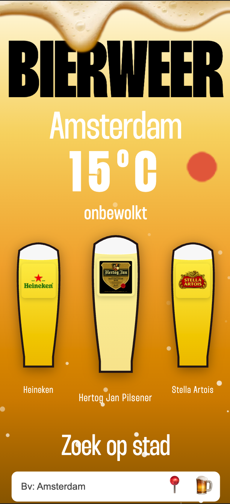
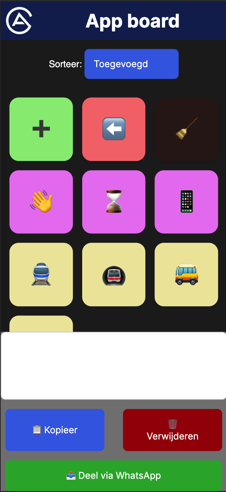
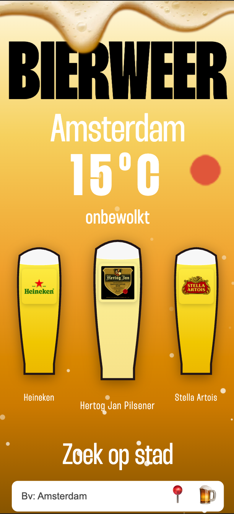
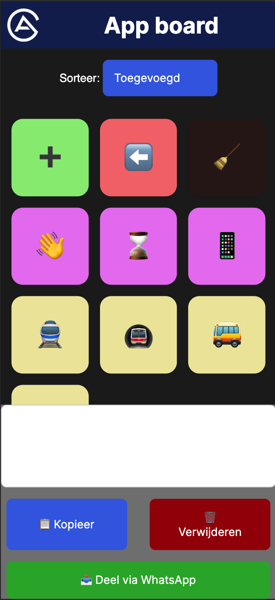
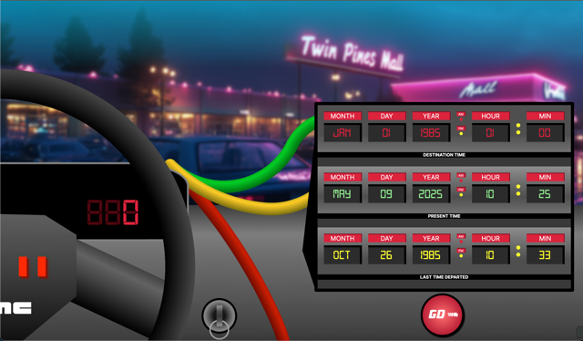
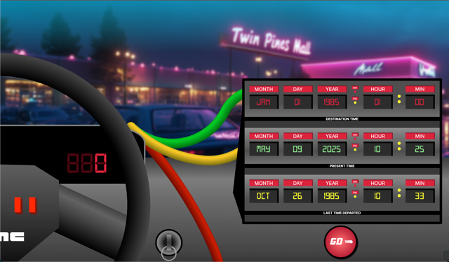

1. Leren loslaten en vertrouwen op teamgenoten
Vanaf het begin van het volgende project zal ik bij minimaal drie
situaties waarin ik normaal gesproken de leiding zou nemen, bewust
de regie aan een teamgenoot overlaten. Na afloop reflecteer ik samen
met mijn team op het resultaat om mijn vertrouwen in hun aanpak te
versterken. Ik evalueer mijn vooruitgang wekelijks in mijn logboek
gedurende de looptijd van het project (5 weken).
2. Vaker hulp en feedback vragen bij vormgeving
Tijdens de komende 5 weken vraag ik bij elk ontwerpproces minimaal
twee keer actief om feedback van medestudenten, bijvoorbeeld tijdens
feedbackrondes of via Teams. Ik documenteer deze momenten en de
ontvangen input, en bespreek tijdens de eindbespreking hoe dit mijn
ontwerpresultaat heeft beïnvloed.
3. Consistente en gestructureerde documentatie bijhouden
De komende 5 weken zal ik wekelijks op vrijdagmiddag één uur
inplannen om mijn voortgang, keuzes en leerpunten te documenteren in
mijn Productbiografie. Ik gebruik hiervoor een vaste structuur: wat
ik gedaan heb, waarom ik bepaalde keuzes maakte, wat goed ging en
wat beter kon. Aan het einde van het project evalueer ik of ik dit
elke week heb bijgehouden en hoe het mijn inzicht in mijn proces
heeft verbeterd.
Reflectie
Weekly Nerd sprekers
Het belangrijkste wat ik hieruit meeneem zijn het belang van
accessibility en het principe van the rule of least power. Daarnaast
heeft deze ervaring me laten zien dat de mogelijkheden van het web
veel groter zijn dan ik aanvankelijk dacht. Van het aansturen van
printers tot het creëren van digitale schilderijen: het web biedt
eindeloze creatieve en technische toepassingen.
Hackaton
Ik ben erg tevreden met het eindresultaat. Samen hebben we iets
moois neergezet, en de samenwerking verliep soepel. Ik heb de basis
van de code opgezet, waarna mijn teamgenoten hun delen aanleverden.
Deze kon ik vervolgens moeiteloos integreren. Daarnaast kon ik
direct toepassen wat we tijdens de vakken hebben geleerd, wat het
proces extra prettig maakte.
Hoe gaat het? (Tussengesprek)
De minor verloopt tot nu toe erg soepel. Ik haal veel plezier uit
het bouwen van verschillende projecten en merk dat ik mezelf goed
kan uitdagen. Vooral mijn bierapp en de DeLorean maken mij trots, al
besef ik dat ik ze nu, met mijn huidige kennis, nog mooier en beter
zou kunnen maken. Ook geniet ik ervan om steeds weer nieuwe
technieken te ontdekken die het web toegankelijker maken voor
iedereen.
De Meesterproef
De Meesterproef was een geweldige ervaring. We hebben als team echt
een prachtig resultaat neergezet in vijf weken. Het was een hele
leuke opdracht met een geweldige werkgever. Met in het begin wat
kleine tweaks aan het design, konden we al snel aan de slag met de
website.Ik heb veel gekke dingen gemaakt en veel geleerd over code
en teamsverband.
Met wat kleine hobbels in het team hebben we iets moois neergezet,
iets waar we echt heel trots op mogen zijn.
Leerdoelen
1.
2.
3.
Dat was het dan
Wauw.. Wat een bijzondere maanden zijn dit geweest. Ik heb veel
geleerd, zowel over mezelf als over de mogelijkheden van het web. De
minor heeft mij ontzettend veel nieuwe dingen geleerd, en ik ben erg
trots op de projecten die ik heb gemaakt. Bedankt Sanne, Vasilis,
Cyd, Declan en Krijn voor de geweldige minor en de inspirerende
sprekers.


 




 
